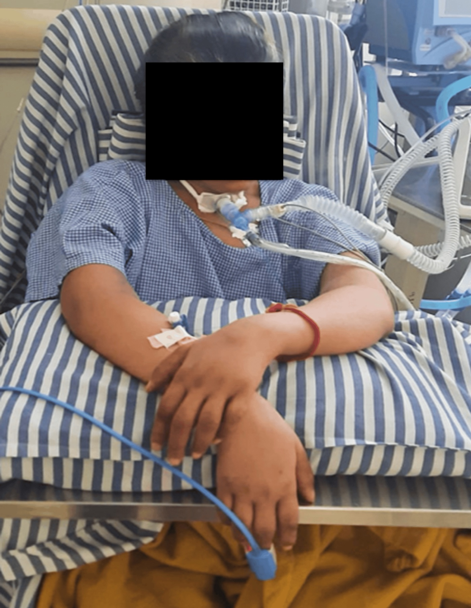

Cravar o padrão clínico motor, o trajeto ascendente e a hierarquia motor > sensitivo.
Padrão motor
A clínica é uma fraqueza do segundo neurônio, porque o 2º neurônio compõe o nervo motor. Padrão: fraqueza flácida, arreflexa (polineurítica / polineuropática), de baixo para cima. A fraqueza é ascendente.
Trajeto no "bonequinho"
Classicamente atinge primeiro o membro inferior, depois o membro superior, depois o tórax, depois a cabeça. Em resumo: membros inferiores → membros superiores.
Neuropatia do nervo periférico — com preferência motora
Guillain-Barré não é "só do segundo neurônio" no sentido restrito: é uma neuropatia do nervo periférico. Porém, prefere o nervo motor (o segundo neurônio).
Pode acometer nervos autônomos (simpático / parassimpático) → desautonomias: arritmia, hipotensão. Pode causar dor lombar quando acomete a raiz nervosa sensitiva.
Pode acometer a sensibilidade, mas geralmente pouco. Quando afeta, fica mais na ponta / planta dos pés. A hipoestesia pode subir, mas não é o padrão.
Regra: Guillain-Barré prefere a parte motora; sensibilidade não é grande destaque da doença.
Por que importa na prática: quem espera "anestesia em luva e bota" para cravar GBS atrasa o diagnóstico; o motor e o reflexo mandam.
Resumo operacional: flácida · arreflexa · ascendente · motor > sensitivo · autonômico possível.

Figure 3 — Sitting in bed with assistance. From: Killedar R, Wakde G, Kulkarni S, Jadhav A, Bhise S. Rehabilitation of a Pregnant Patient With Guillain-Barré Syndrome: A Physiotherapy Perspective. Cureus. 2025;17(7):e88340. Licensed under CC BY 4.0. Source: https://pmc.ncbi.nlm.nih.gov/articles/PMC12365745/
Flácida nos quatro membros
A tetraparesia flácida com necessidade de assistência para o tronco é a tradução clínica do que o exame encontra: força que desaba de baixo para cima, tônus que some, reflexos que se calam. Não é hemiparesia (AVC), não é paraparesia espástica (medula): são quatro membros flácidos e arreflexos.
Dois separadores de prova — esfíncteres e pares cranianos bilaterais.
Quiz
Q1. O padrão motor clássico de Guillain-Barré é:
Q2. Sobre a sensibilidade no GBS:
Q3. Desautonomias no GBS podem incluir: